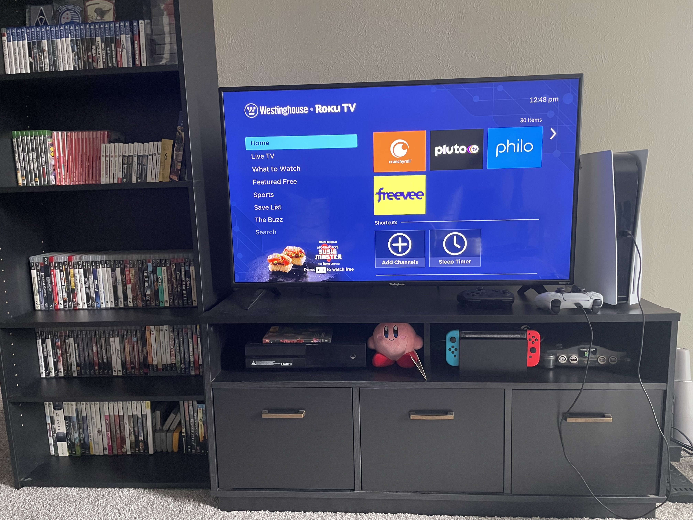
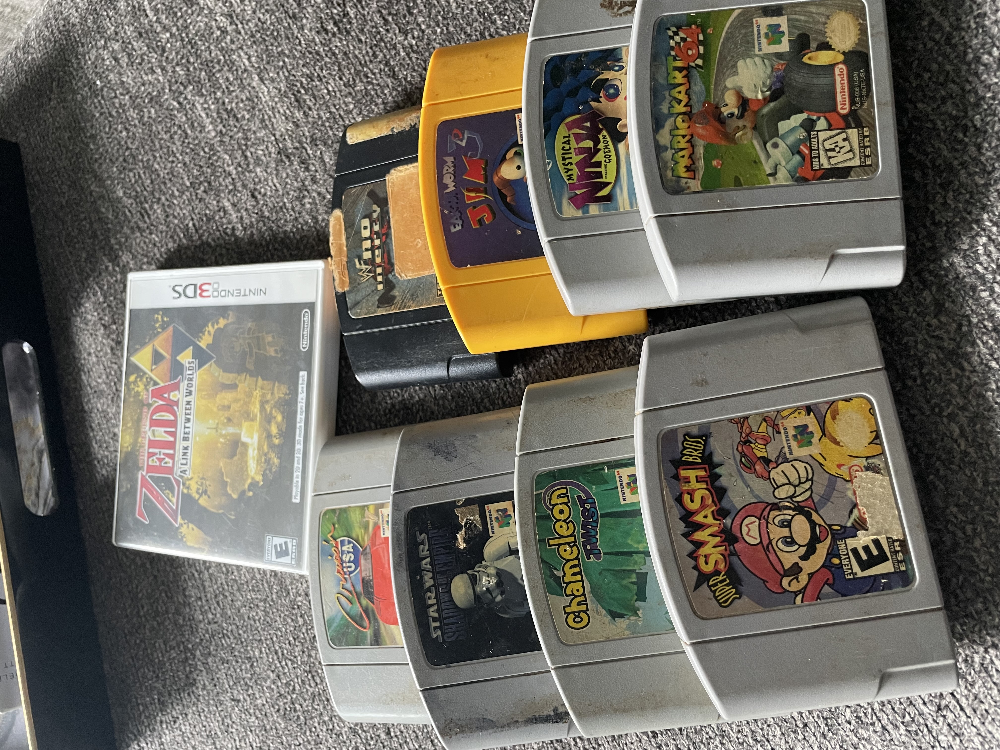

Here we have some modest decoration that Jasmine picked out herself. Neutral colors and a warm home appeal. As well she loves to include small touches such as decorative candles and other miscellaneous decorations.
Games collection

Many games and consoles belonging to Jasmine and myself. All together this isn't everything we own, and even though I am the bigger gamer of the two of us, she has loved and grown up with it just as much as anyone else.
Classic N64 games

A few Nintendo 64 games that Jasmine owns. Of course these are older, but there are quite a few gems in there. I mean come on, who doesn't love Mario Kart and Smash Bros?